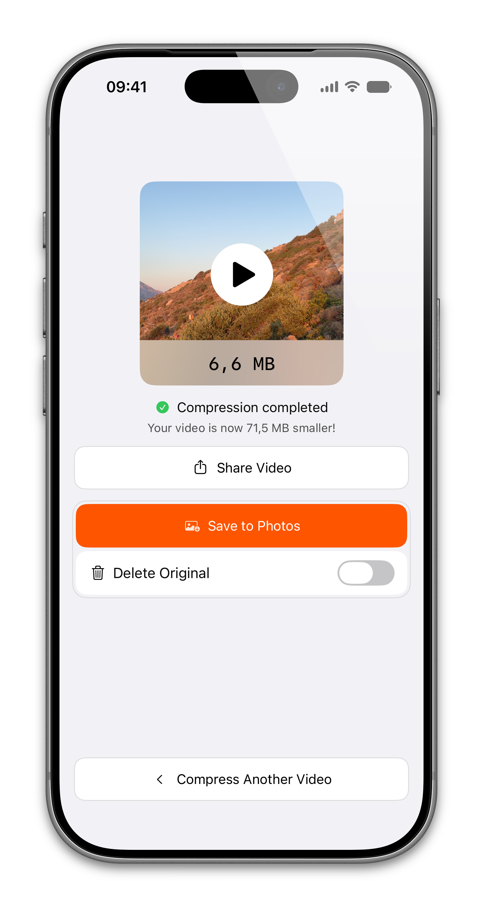
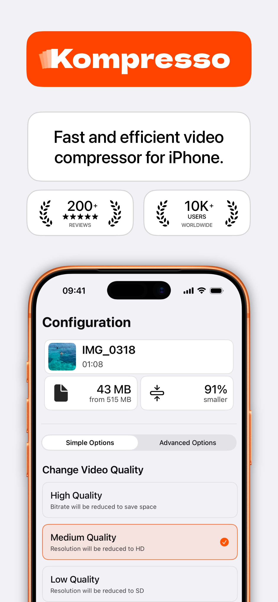
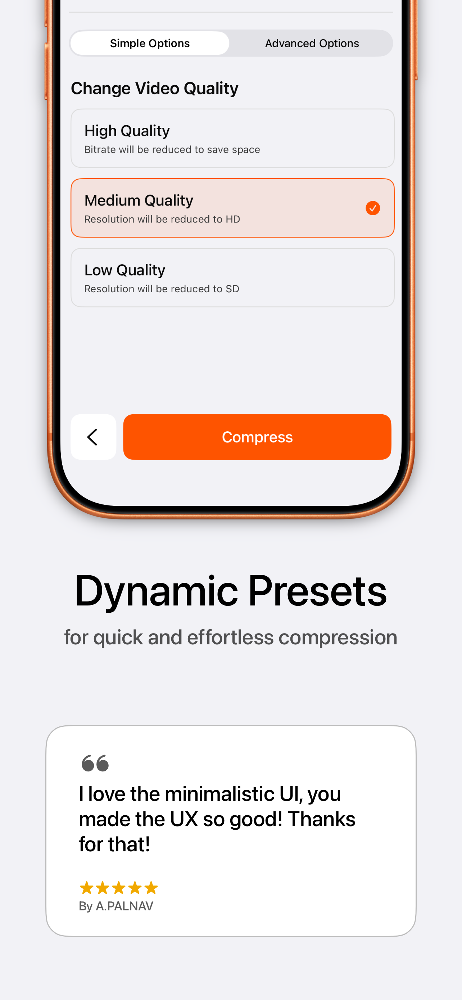
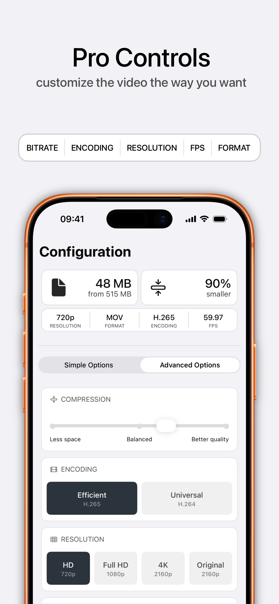
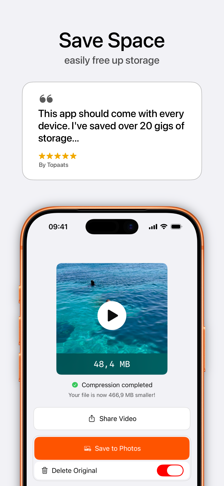
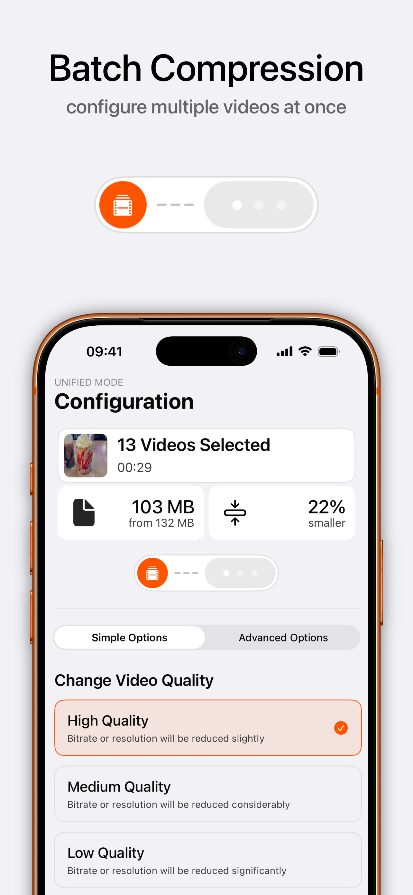
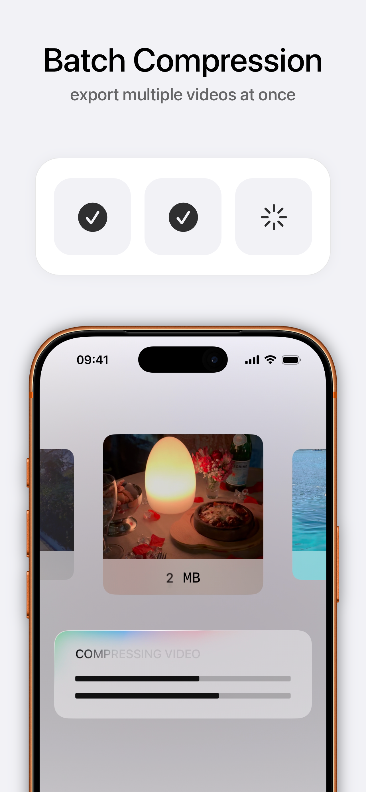

The fast video compressor for iPhone
Compress and reduce video file size in a few taps. Shrink 4K and HD videos, convert MP4, MOV and HEVC, and free up storage — all on-device, with no quality loss you can see.

Everything you need to shrink a video
Built natively for iOS with Apple's hardware-accelerated encoders — like HandBrake, but in your pocket and blazing fast.
Hardware-fast
Uses Apple's native video engine for lightning-fast compression with minimal battery drain — no slow third-party encoders.
Reduce size, keep quality
A simple slider balances file size and quality. Cut 4K clips down to a fraction of their size with no visible loss.
Pro controls
Fine-tune bitrate, resolution (720p / 1080p / 4K), frame rate, format (MP4 / MOV / M4V) and codec (H.264 / H.265).
Batch compression
Select multiple videos, apply one configuration and export them all at once. Perfect for clearing out your camera roll.
100% offline & private
Your videos never leave your device. No uploads, no cloud, no tracking, no ads — ever.
Convert formats & codecs
Turn HEVC into H.264 for compatibility, or export MP4/MOV — so your video plays anywhere you send it.
Simple on the surface, powerful underneath
One-tap presets for speed, advanced controls when you want them.






Compress a video in three taps
No sign-up, no learning curve. From full-size to shareable in under a minute.
Pick your video
Open Kompresso and select any clip from your library — or several at once for batch compression.
Choose a preset
Tap High, Medium or Low for instant results, or open Advanced to set bitrate, resolution, FPS, format and codec yourself.
Compress & save
Hit Compress. Watch the size drop, then save to Photos or share straight to email, WhatsApp, Discord and more.
How to compress video on iPhone — step-by-step guides
Answers to the exact task you're trying to do, plus how to get it done in Kompresso.
How to compress a video on iPhone
The complete 2026 guide to shrinking any video on your iPhone or iPad.
Read guide → EmailCompress a video for email
Get any clip under the 25 MB attachment limit and send it in seconds.
Read guide → WhatsAppCompress a video for WhatsApp
Beat WhatsApp's 16 MB limit and send longer videos without quality drops.
Read guide → SharingSend a large video from iPhone
Video too big to text or email? Shrink it so it actually sends.
Read guide → ConvertConvert a video to MP4 (HEVC → H.264)
Fix videos that won't play by converting HEVC to universal H.264 MP4.
Read guide → 4KCompress 4K video on iPhone
Tame massive 4K clips down to a share-friendly size the smart way.
Read guide → QualityReduce file size without losing quality
The settings that shrink a video while keeping it looking sharp.
Read guide → DiscordCompress a video for Discord
Get under Discord's upload limit without paying for Nitro.
Read guide → StorageFree up iPhone storage with videos
Reclaim gigabytes by compressing the videos filling up your phone.
Read guide → BatchBatch compress multiple videos
Compress your whole camera roll in one run with batch mode.
Read guide →Video compression questions, answered
Why is my iPhone video file so large?
iPhones record at high resolutions and frame rates — a single minute of 4K 60fps footage can top 400 MB. The fix is to lower the bitrate, resolution or frame rate, which shrinks the file dramatically while it still looks great on a phone screen.
How do I make a video small enough to email?
Most email services cap attachments at around 25 MB. Open the clip in Kompresso, choose a preset or drop the resolution to 720p, tap Compress, and export a version that slips under the limit.
What is the maximum video size for WhatsApp and iMessage?
WhatsApp limits videos to about 16 MB when sent as media (up to 64 MB as a document). iMessage and MMS are stricter still. Compressing first is the reliable way to make sure your video actually sends.
Does compressing a video lower its quality?
Only as much as you allow. Kompresso balances size and quality with a slider and presets, and the H.265 (HEVC) codec keeps quality high at a far smaller size. For messaging and social, the difference is usually invisible.
What is the difference between H.264 and H.265 (HEVC)?
H.265/HEVC compresses roughly 50% smaller than H.264 at the same quality, but H.264 plays on virtually every device and app. Kompresso lets you pick — HEVC for the smallest files, H.264 for maximum compatibility.
Can I compress a 4K video without losing quality?
Yes. Keep 4K resolution and lower the bitrate for a smaller file at full sharpness, or scale to 1080p for an even smaller size that still looks crisp on any screen.
Is Kompresso private and safe to use?
Completely. Kompresso runs 100% offline — your videos never leave your iPhone. There's no cloud upload, no tracking and no ads.
Can I compress many videos at once?
Yes. Batch mode lets you select multiple videos, apply a single configuration and export them all in one run — ideal for clearing space fast.
Does Kompresso add a watermark or cost money?
No watermark, ever, and it's free to download on the App Store. No ads, no forced sign-up.
Shrink your first video today
Join thousands of iPhone and iPad users compressing, converting and reclaiming storage with Kompresso — free, offline and watermark-free.